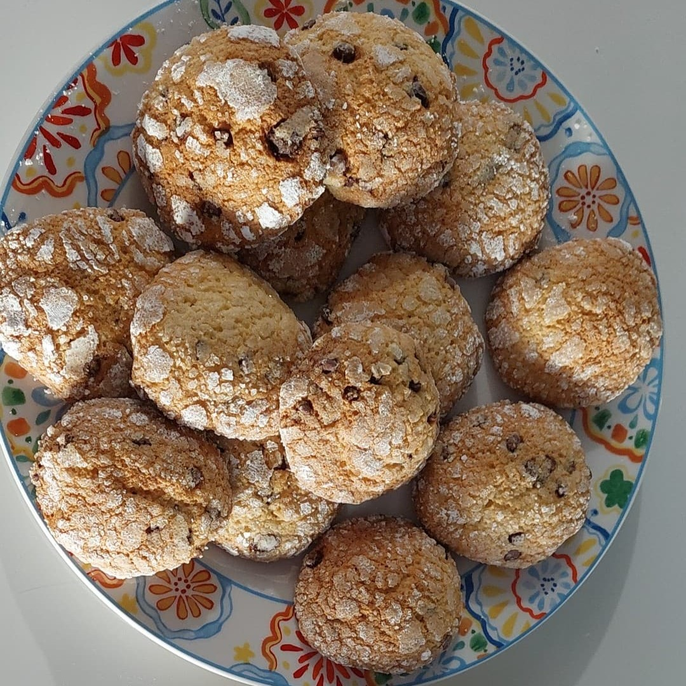
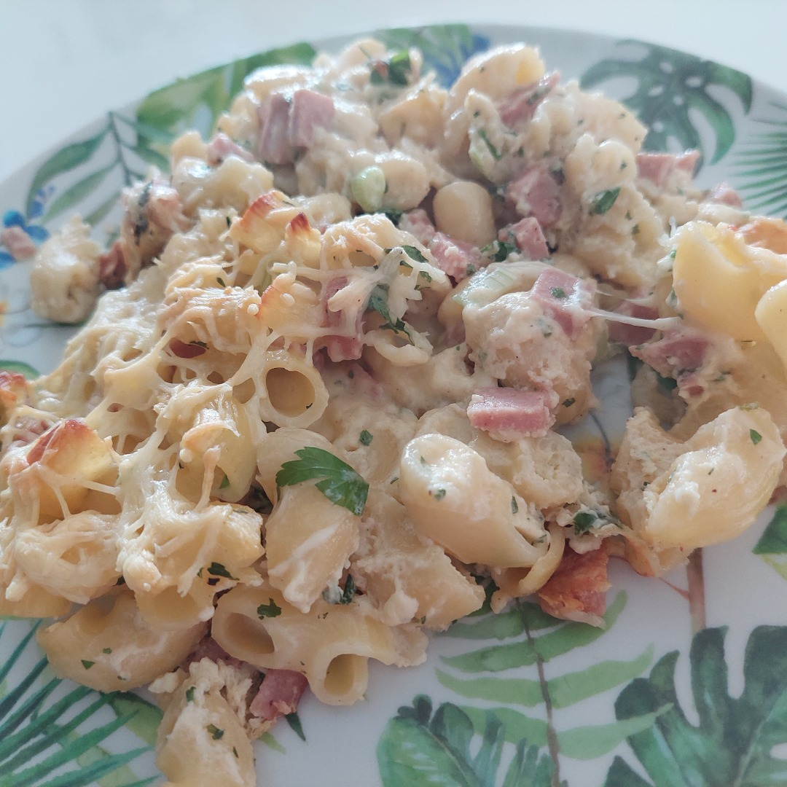
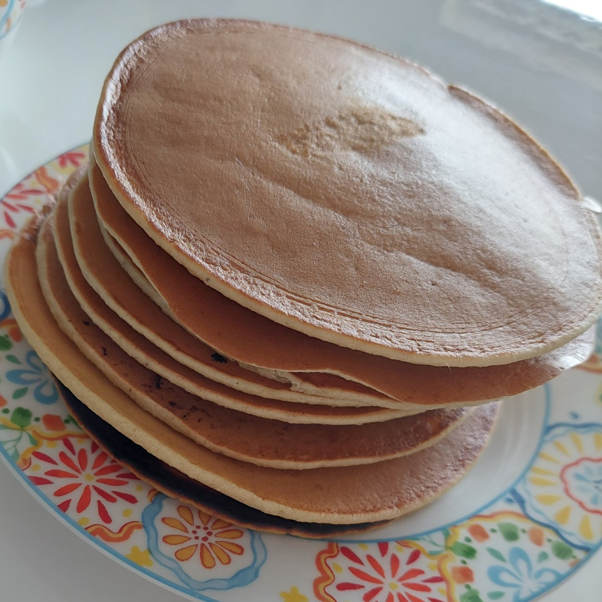

Biscuits italiens revisités
Desserts | 1 JUIN 2022 | ★★★★★
Une recette facile, rapide et délicieuse. Ces biscuits sont croquants, un vrai régal ! Ils sont parfait accompagné d'un thé ou d'un café.
Bienvenue sur la Cuisine du Miel !
Passionnée par la cuisine de partout et curieuse d'en apprendre plus, j'ai décidé de partager mes expériences. Pour ma part, la cuisine est synonyme de découvertes, d'astuces, et de partages. N'hésitez pas à me partager vos réalisations. Bonne découverte !
★★★★★
★★★★★
★★★★☆
★★★★☆
Desserts | 1 JUIN 2022 | ★★★★★
Une recette facile, rapide et délicieuse. Ces biscuits sont croquants, un vrai régal ! Ils sont parfait accompagné d'un thé ou d'un café.
Plats | 1 JUIN 2022 |
Le vrai plat incontournable de la tradition maghrébine. C'est un plat convivial serci avec des légumes et de la viande. Ce couscous est simplement savoureux !
Desserts | 1 JUIN 2022
Brunch, petit déjeuné,goûter ?
Rien de mieux que des pancakes, que tout le monde va aimer... Les petits comme les grands C'est une recette rapide à préparer et inratable.